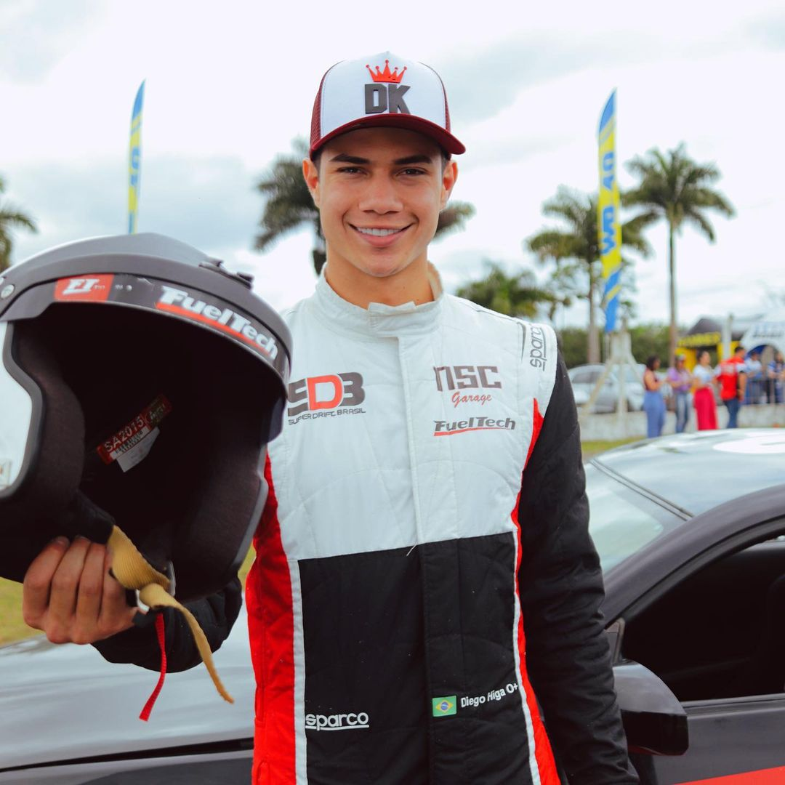

FORMULA DRIFT
TUDO SOBRE O MAIOR CAMPEONATO DE DRIFT MUNDIAL:

A Fórmula Drift é uma categoria do automobilismo de drift dos Estados Unidos fundada em 2004, inspirada na D1 Grand Prix, esta que começou inicialmente no Japão, onde os pilotos demonstram habilidades no drift, uma técnica de condução onde o carro desliza com as rodas traseiras, controlando o ângulo de derrapagem. A competição envolve diversas categorias, como Pro, Pro2 e ProAM, e os pilotos são avaliados em critérios como estilo, linha de drift, velocidade e ângulo de derrapagem. A Fórmula Drift permite modificações nos carros, incluindo troca de motor e ajustes na suspensão, com o objetivo de otimizar o desempenho no drift.
Alguns atribuem a criação do estilo ao piloto japonês Kunimitsu Takahashi, nos anos 70. Ele utilizava a técnica para fazer as curvas mais rapidamente no torneio automobilístico "Japanese Touring Car Championship".
Posteriormente, na década de 80, o também japonês Keiichi Tsuchiya ganhou notoriedade ao aplicar o estilo de Takahashi nas estradas das montanhas do Japão, ainda como atividade não regularizada.
No Brasil o drift ficou mais popular em 2006, depois do lançamento do filme “Velozes e Furiosos: Desafio em Tóquio”, que foi essencial para esse crescimento da modalidade.
BRASIL NA FORMULA DRIFT:
Vários pilotos brasileiros participaram ou participam da Fórmula Drift, incluindo João Barion, que é um piloto profissional e já compete na série nos EUA, Diego Higa, conhecido por ter sido campeão da série Hyperdrive da Netflix e por sua atuação no campeonato Fórmula DRIFT, Mike Nakamura, que foi o primeiro brasileiro a vencer uma etapa da Fórmula Drift Japan, na categoria DJ2 e Marcio Vieira Júnior, conhecido como Juninho, um piloto catarinense que compete na categoria PRO-AM nos EUA, sendo o primeiro representante de Santa Catarina nessa modalidade.
MARCIO VIEIRA JUNIOR:
O jovem piloto de 20 anos, Marcio Vieira Júnior é o primeiro catarinense a representar o Brasil na Fórmula Drift PRO-AM. Juninho, como é conhecido o piloto ganhou notoriedade ao se tornar o vencedor mais jovem da história do Drift nacional quando tinha ainda 16 anos. Em 2021, ele fez sua estreia em uma prova homologada pela CBA (Confederação Brasileira de Automobilismo), na categoria Ultimate Light — voltada a novos pilotos — e sagrou-se campeão brasileiro. Com o título, tornou-se o mais jovem vencedor da história do drift nacional e garantiu vaga na categoria PRO, destinada aos profissionais.
O gosto por carros e adrenalina vem de berço. Juninho cresceu nos bastidores das competições, acompanhando de perto a trajetória do pai, Márcio “Kabeça”, um dos nomes consagrados do drift brasileiro. Bi Campeão da modalidade, Kabeça fundou em Penha (SC) uma escola dedicada à formação de novos pilotos — e foi ali que Juninho teve seus primeiros contatos com a direção.
A estreia na Fórmula Drift PRO-AM representa não apenas a concretização de um sonho pessoal, mas também um passo importante para o esporte no Brasil, com Juninho levando o nome do país e do estado de Santa Catarina ao circuito internacional.
DIEGO HIGA:
Diego Rafael Higa (Santos, 18 de março de 1997), é um piloto brasileiro de automobilismo, especialista em Drift. Apesar da decisão de não continuar na Formula Drift, Diego é referência em Drift no Brasil e ficou conhecido por ter sido campeão da série Hyperdrive da Netflix, em 2019. Vencedor do Capacete de Ouro de 2019, da Confederação Brasileira de Automobilismo e possui mais de 38 troféus em sua carreira.
Atualmente, compete no SuperDrift Brasil com seu Nissan 350Z, preparando-o na NSC Garage, em Santos e é dono da "Escola de Drift Diego Higa", na qual dá aulas usando seu estílo único de Drift.
JOÃO BARION:
João Barion (nascido em 14 de abril de 1987) é um piloto brasileiro de automobilismo . Barion começou sua carreira no kart aos nove anos de idade, continuando no kart até 2003, quando conseguiu uma vaga na equipe sul-americana de Fórmula 3 AmirNasr. [ 1 ] Em 2004, ele se mudou para a equipe Avallone, antes de se juntar à equipe Piquet em 2005.
Em 2019, Barion participou da série de competição de corrida Hyperdrive , da Netflix . Ele conseguiu chegar à final, mas não pôde continuar devido ao vazamento de água do radiador do seu Ford Mustang 1965 personalizado.